Membentuk generasi penyelam kompeten, berlisensi profesional, dan pelopor edukasi konservasi laut.
Jawara Diving Club (JDC) merupakan klub selam pertama di Universitas Sultan Ageng Tirtayasa yang diresmikan pada 29 Mei 2025 di Kota Serang. Dipimpin oleh Rd. Amalul Mukhlishin, JDC hadir sebagai wadah strategis untuk mengembangkan minat dan bakat mahasiswa serta menjadi pelopor edukasi konservasi laut di lingkungan kampus. Kami berkomitmen membentuk generasi penyelam yang kompeten, berlisensi profesional, dan memiliki kepedulian tinggi terhadap pelestarian ekosistem laut melalui tiga prinsip utama: Protect, Restore, dan Research.
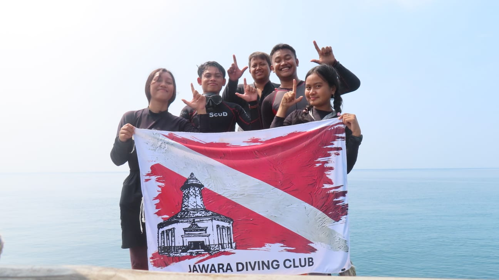
Semua tindakan kami didasarkan pada riset dan data lapangan yang akurat untuk memastikan efektivitas konservasi.
Melibatkan komunitas, peneliti, dan pemangku kepentingan dalam setiap inisiatif untuk mencapai tujuan bersama.
Menjunjung tinggi transparansi, akuntabilitas, dan tanggung jawab dalam setiap proyek yang dijalankan.
Mempromosikan keberlanjutan jangka panjang dalam seluruh upaya konservasi demi generasi masa depan.
Menjadi organisasi konservasi perairan terkemuka yang memulihkan dan mengelola ekosistem pesisir serta daratan melalui pendekatan ilmiah dan kemitraan strategis.
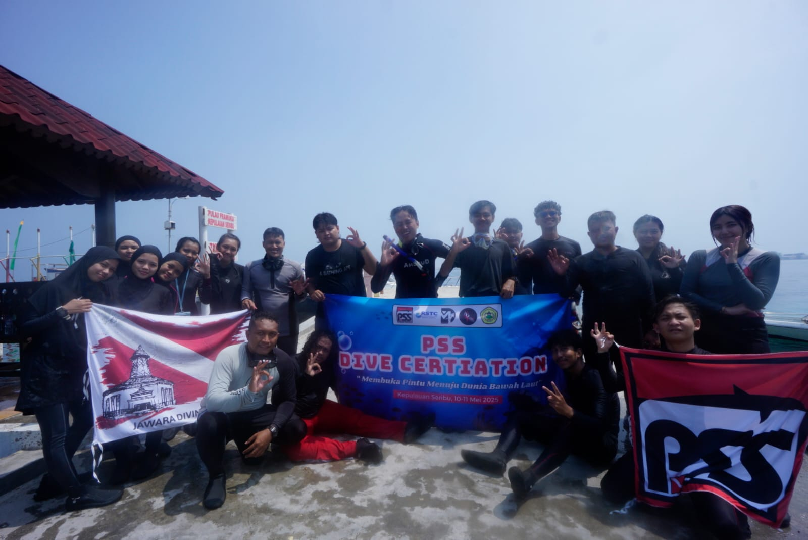
Tahap awal pembentukan keahlian dasar melalui pelatihan lisensi di Pulau Pramuka.
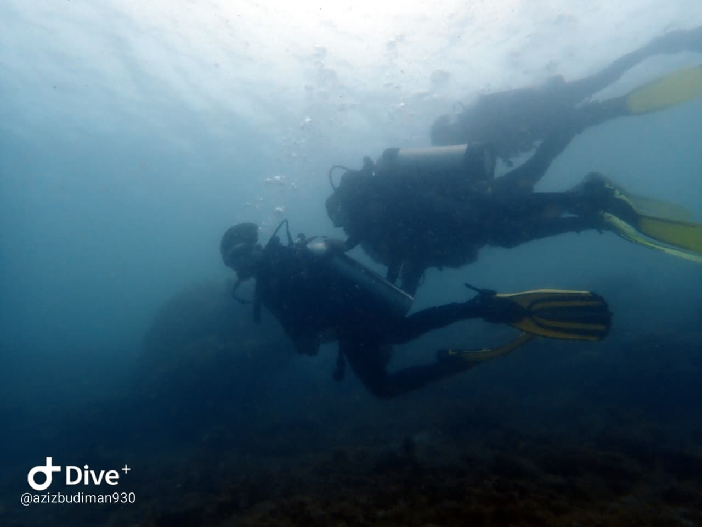
Pemantauan struktur rumah ikan buatan untuk mengevaluasi efektivitasnya dalam mendukung ekosistem.
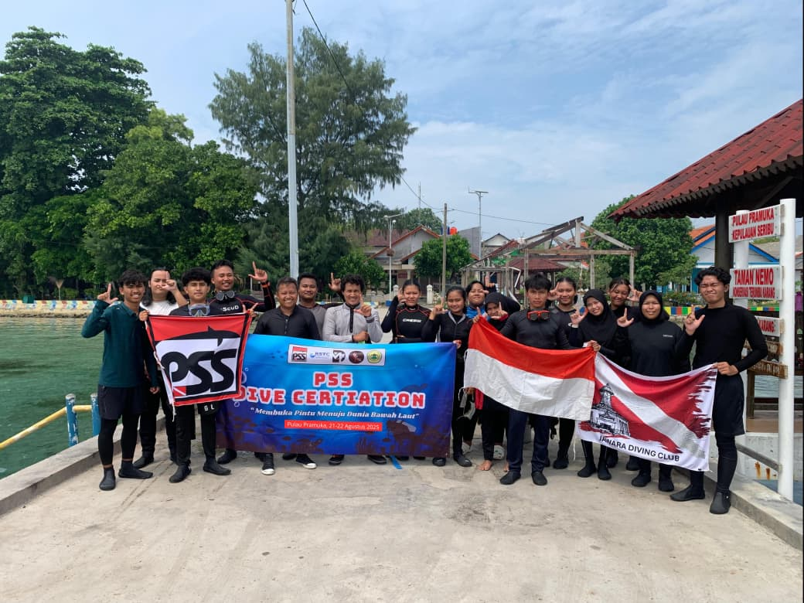
Mencetak 16 anggota berkualifikasi resmi dari agensi PSS Dive di Pulau Seribu.
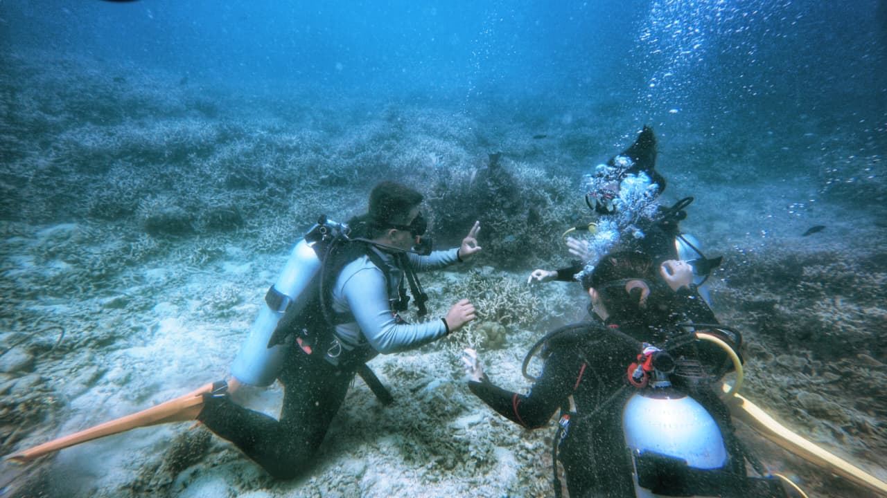
Kelanjutan program sertifikasi bagi 18 peserta untuk memperluas jangkauan keanggotaan.
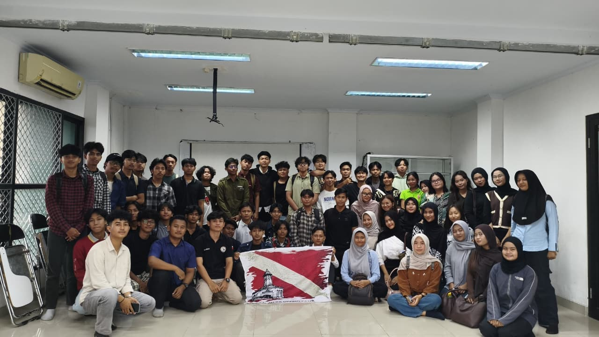
Momentum pengukuhan klub sebagai organisasi resmi di bawah naungan universitas.
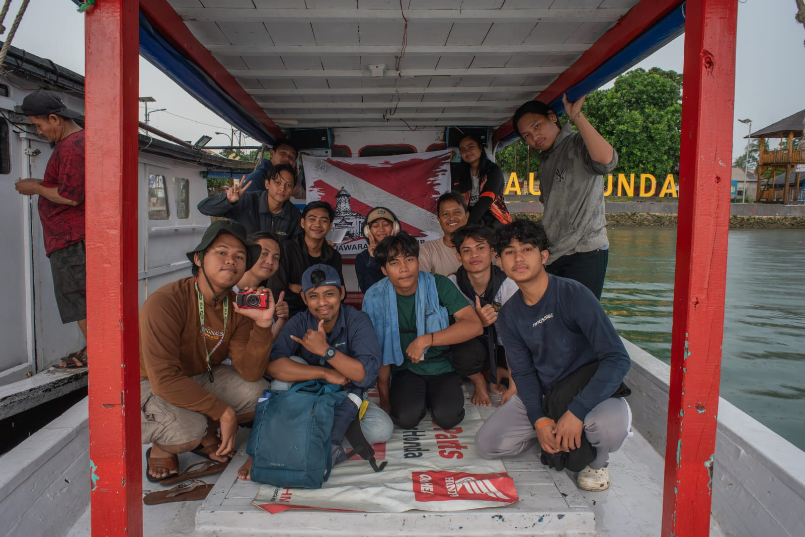
Kolaborasi penanaman 100 unit Fishdome untuk restorasi terumbu karang.
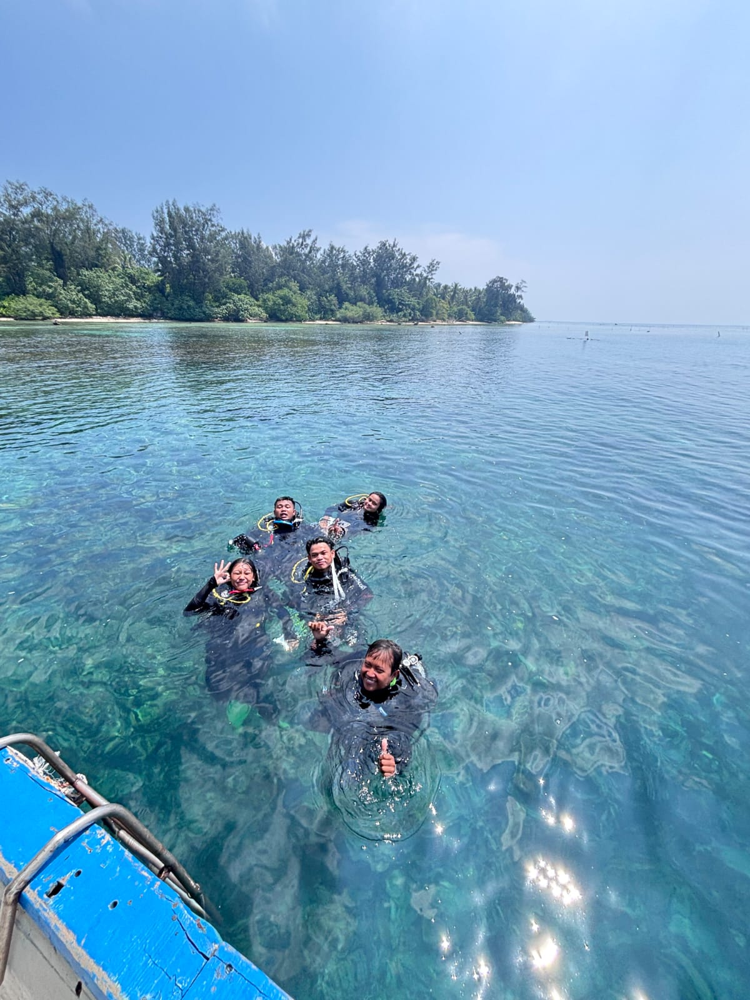
Reef Monitoring
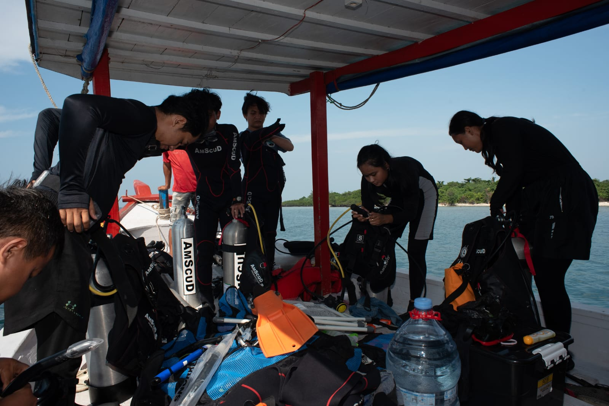
Underwater Survey
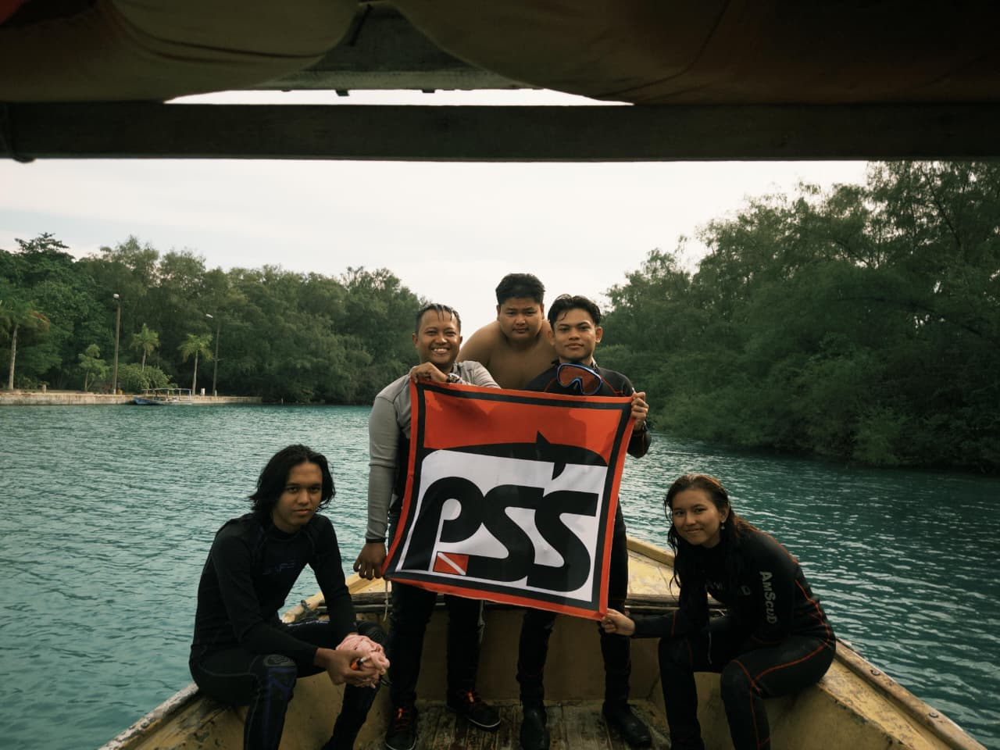
Diving certification
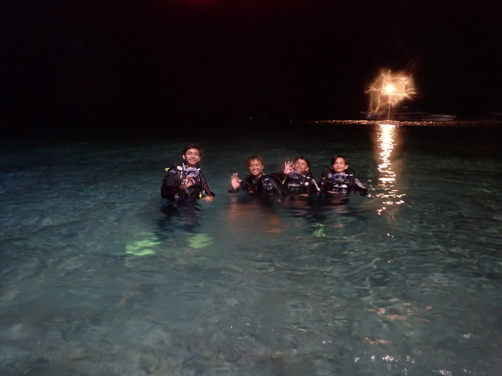
Team Briefing
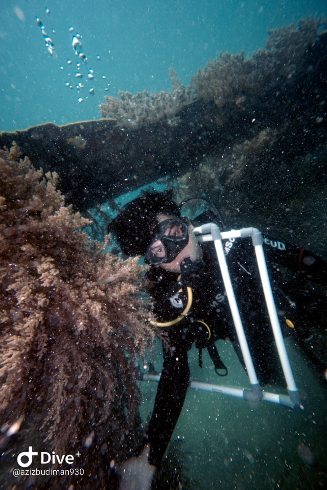
Scientific Diving
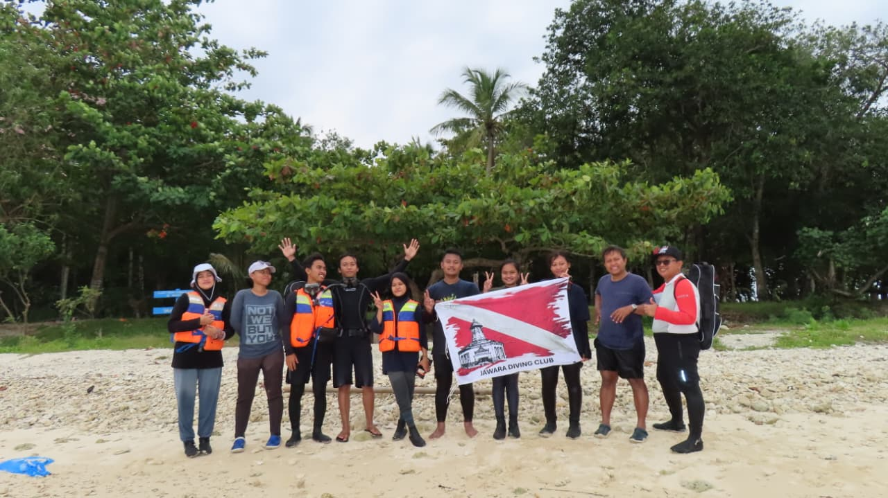
Island Expedition